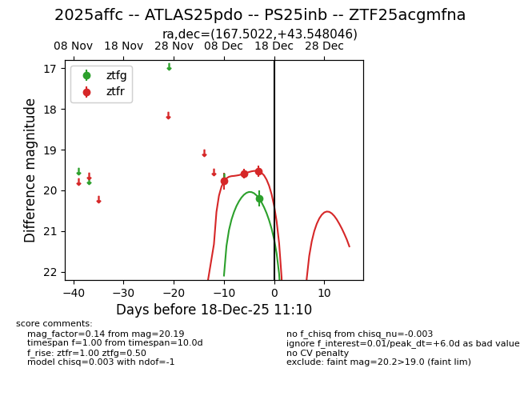
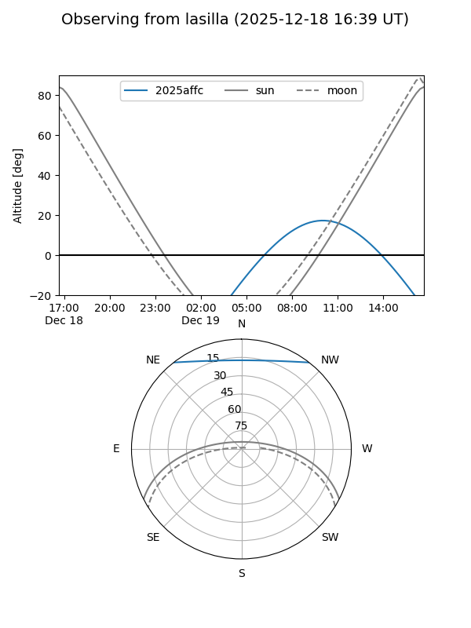
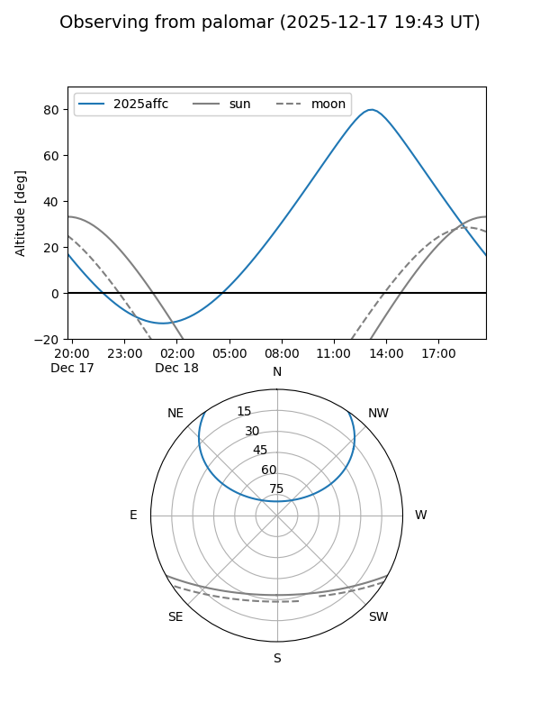
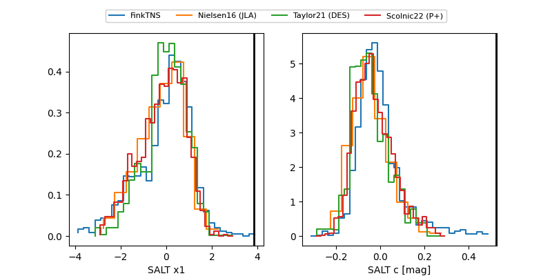

2025affc
Target 2025affc at 2025-12-31 18:00
Aliases and brokers:
FINK: link
Lasair: link
ALeRCE: link
TNS: link
YSE: link
alt names
ZTF25acgmfna (ztf,fink_ztf)
2025affc (tns,yse)
ATLAS25pdo (atlas)
PS25inb (panstarrs)
Coordinates:
equatorial (ra, dec) = 167.5022,+43.54805
equatorial (HMS+DMS) = 11:10:00.54,+43:32:52.97
galactic (l, b) = (167.5549,+63.77532)
Flags:
Photometry:
last ztfg=20.19, ztfr=19.54
1 ztfg, 4 ztfr detections
Lightcurve

Visibility


Additional plots
